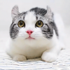
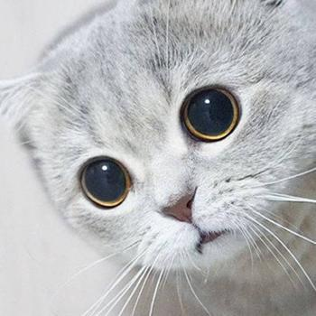
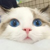
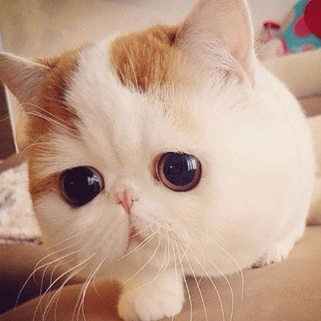
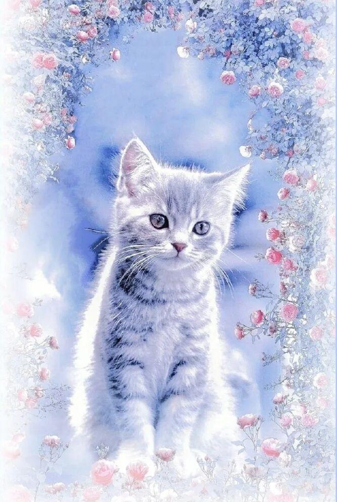

喵喵星球网
|  |  |
|  |  |
|  | 方式一：严格按时间喂养 |
|
在一天中规定用餐时间。罐头食品和干食品都可以用这种方式喂养。 优势：食物的摄入可以被严格控制，这意味着很容易监控猫猫的食欲变化。但，如果家里有多只猫猫的话，要保证每只猫猫都可以获得食物，而不是仅其中一只占主导地位——这样会导致一只猫可能会吃下所有的食物，体重增加太多，而其她猫可能会吃不饱，从而失去所需的营养。 缺点：猫猫可能会在两餐之间需要食物。而猫猫无法控制自己在某个时候需要吃多少东西。当然，如果遵循兽医的建议，适当的数量和定期喂食，猫猫确实会得到合理的食物和营养。 |
|
| 方式二：随时喂养 | |
|
如果你没有考虑其他方式，可以自由喂养你的猫猫，食物是随时可用的。请记住，只有干粮才能以这种方式喂养。如果你发现干粮在碗里超过一天，就要扔掉它，保持碗里的食物是新鲜的。 优势：你的猫猫每天可以按自己的时间表，少食多餐。 缺点：随时喂食猫会导致暴饮暴食和肥胖。这也很难监控猫猫胃口是否有所改变。如果养了多只猫猫，就更难了解判断，每只猫吃了多少。 |
|
| 方式三：混合喂养 | |
|
混合喂养可以定义为每日两次供应罐头食品，而干燥食品是随时提供的。 优势：混合喂食可以让你的猫猫每天按自己的时间表吃少食多餐。当你喂她湿的食物时，你至少可以部分地监测她的食欲。这样能为猫猫提供干、湿食物，保证所需营养。 缺点：和随时喂食一样，混合喂养通常会导致暴食和肥胖，所以要测量食物量，直到第二天才把碗装满是很重要的。如果你有多只猫，很难监控每只猫的总摄取量，所以不建议用随时喂养的方式给你的猫猫。 |
| 1-2个月大 |
猫咪是现代最常见的宠物，有不少的人饲养猫咪。可是，有些新手铲屎官在把猫咪接回家以后，不知道该怎么喂养它。都在纠结该给猫咪吃什么，是猫罐头还是我们自己吃的饭，该给猫咪吃多少量合适。以下就把猫咪喂食时间控制、猫咪各阶段的喂养方法告诉你,让你不再纠结。
猫咪喂食时间及各阶段的喂养方法
|
| 这个期间是一个过渡期，因为小猫咪刚刚满月，这个时候，除了吃一些专门的奶粉之后，我们还可以让主人喂养它们一些小猫的糕点，或者是幼猫才能吃的一些专属猫粮。在喂养猫粮的时候，大家应该要注意，我们应该首先要用水专门泡软了之后，再让小猫去吃。因为，这个时间段的小猫咪年龄还是比较小，肠胃功能比较弱。不建议大家一直喂养猫咪猫粮，还是要把奶粉和猫粮混一起，这样才能去给小猫吃。 | |
| 2-3个月大 | |
| 这个阶段的小猫和人一样，就要开始断奶了。这个年龄段的猫咪，可以先喂它们一些细碎的软的食物。猫主人在给小猫咪选购猫粮的时候，要注意看猫粮袋子后面的成分，不要因为营养方面的成分不均衡，从而导致猫咪营养不良。而这个时候的猫咪在吃猫粮的时候，还是要先泡软。至于营养膏，可以在猫小的时候喂养，主人们要记得，一天只需要喂给它们两厘米就足够了。 | |
| 3-5个月大 | |
| 三个月之后的小猫咪已经开始长牙齿了。这个时候的猫咪主要还是以吃猫粮为主。猫粮应该选用一些营养成分比较高的食物。小猫咪通常来讲在第四个月的时候会开始换毛，所以，它们在这个阶段可能需要营养物质比较多的食物。如果你们家的猫咪在吐毛球的问题上比较严重的话，主人可以买一只化毛膏喂它，这样可以减轻它的呕吐情况。家庭条件情况比较好的主人，可以专门买一些罐头给小猫吃。只是，这个时候吃猫粮的时候，都不用再专门泡软。 | |
| 5个月以上 | |
| 五个月以上的猫咪，到了成长发育的最关键时期。这个时候猫咪的个头在不断地生长，它们的骨头和肌肉都在开始发育。所以，在这个时候对猫咪钙成分的补充非常有必要。在这个时间阶段，喂养猫咪可以注意多喂一些营养肉制品，比如：牛肉，鸡肉或者是猫咪专门吃的罐头。也可以专门喂一些经常喂养猫咪的小零食，比如：营养膏之类。另外，主人们也可以自己动手给猫咪做一些专门的营养餐。主人们也可以专门注意一下猫咪的饮食口味，不同猫咪可能喜欢吃不同类型的肉制品。同时，尽量不要喂小猫生肉，生肉中很有可能会含有寄生虫威及猫咪的身体。 | |
| 1岁后 | |
| 一岁之后的猫咪长成成猫，在喂食方面要互相搭配。营养膏、成猫猫粮、罐头之间要营养搭配均衡。喂食时根据猫咪体型、活跃程度喂食合适的猫粮。在购买猫咪食品时，要密切关注食物成分比例，猫咪是食肉动物，蛋白质一定要高。猫咪所需的牛磺酸，维生素，矿物质等必须从食物中全面摄取。 | |
| 7岁后 | |
| 猫咪七岁以上就已经步入老年阶段，肠胃功能衰弱、骨骼强健度下降，牙齿出现问题。因此所选择的猫粮不应过硬，食物中可添加益生菌有助于消化。 |
| 首页 | 上一页 | 10 | 下一页 | 尾页 |
网页底部